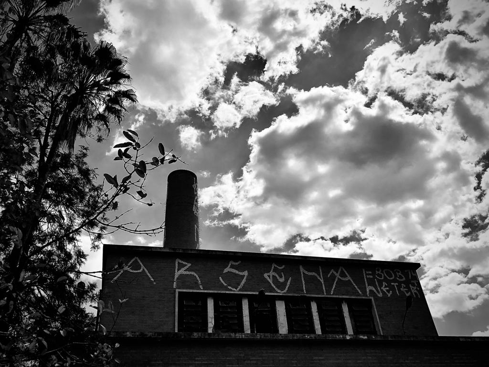
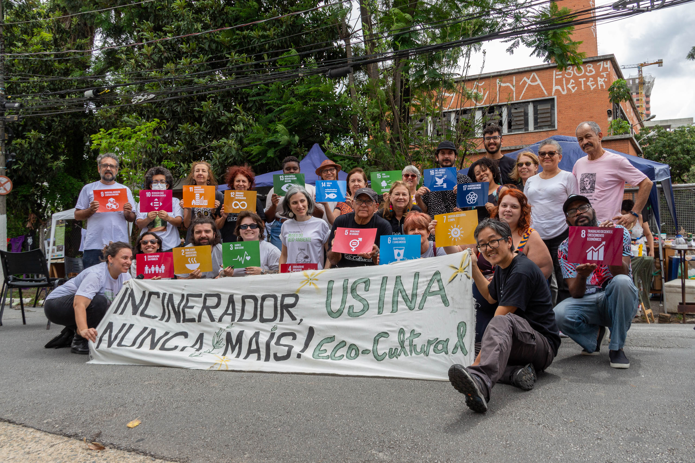
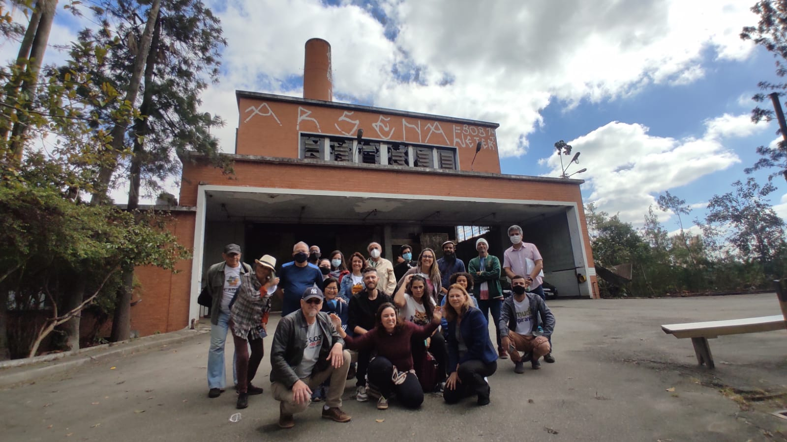
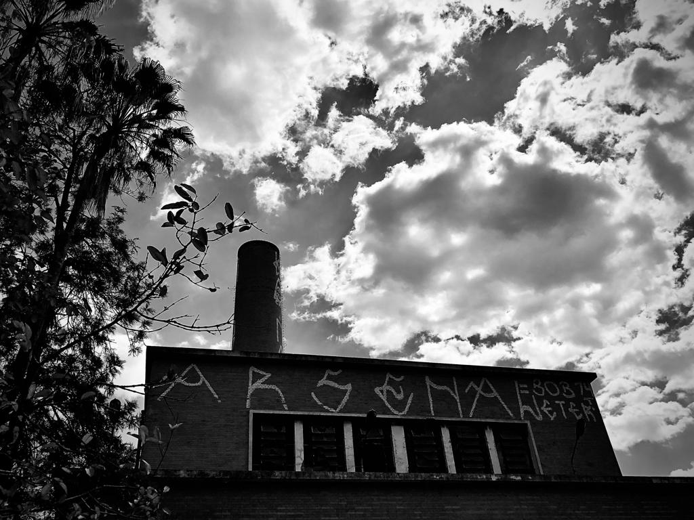
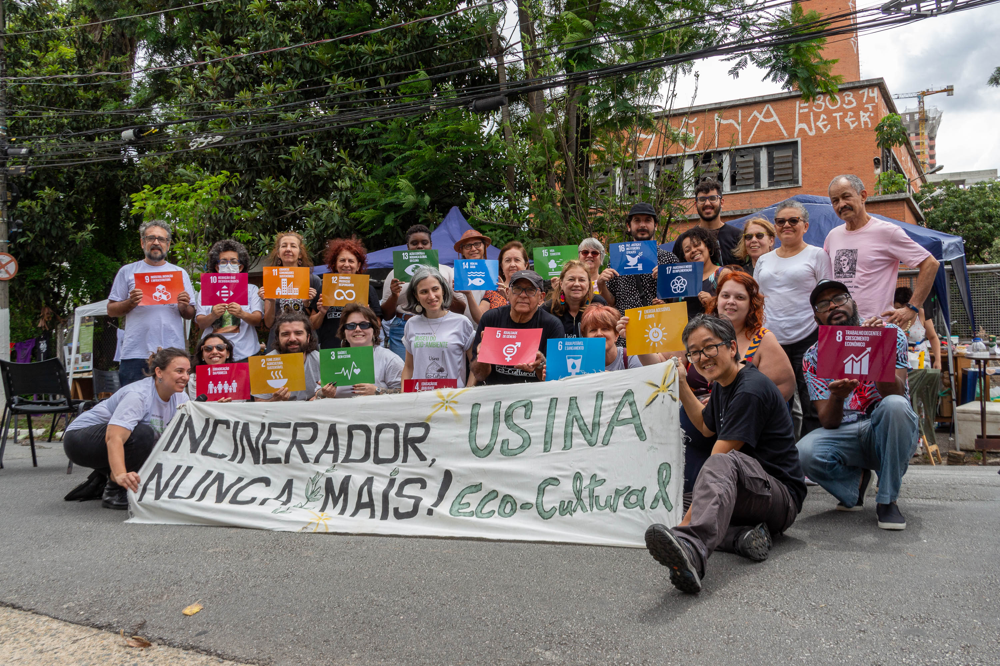
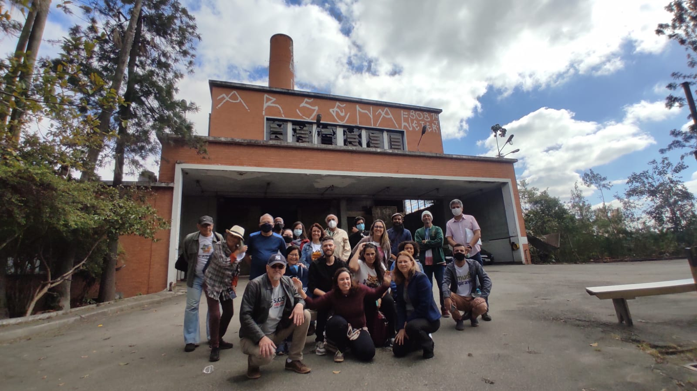
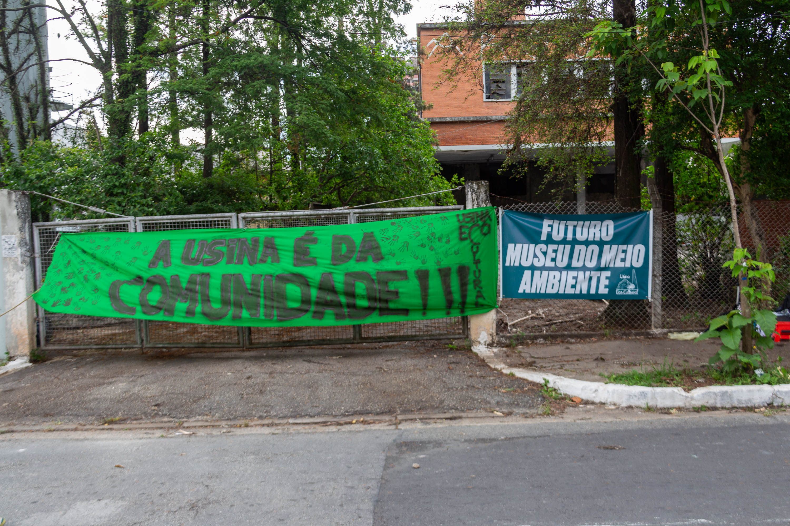
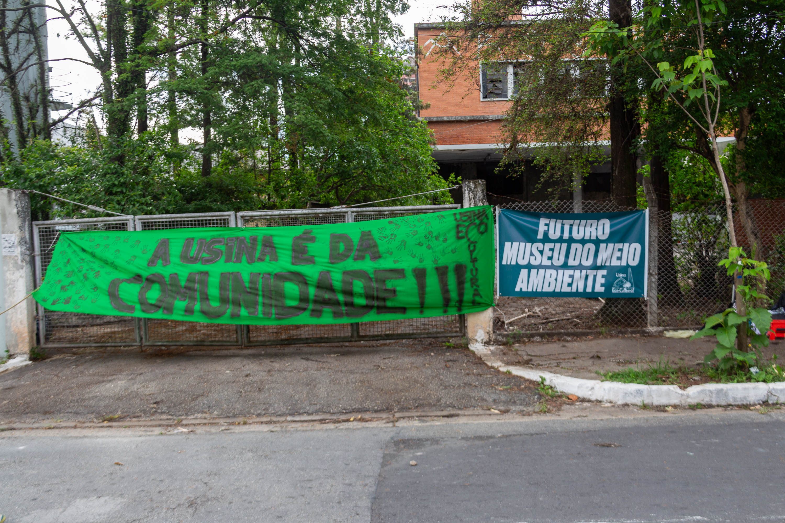
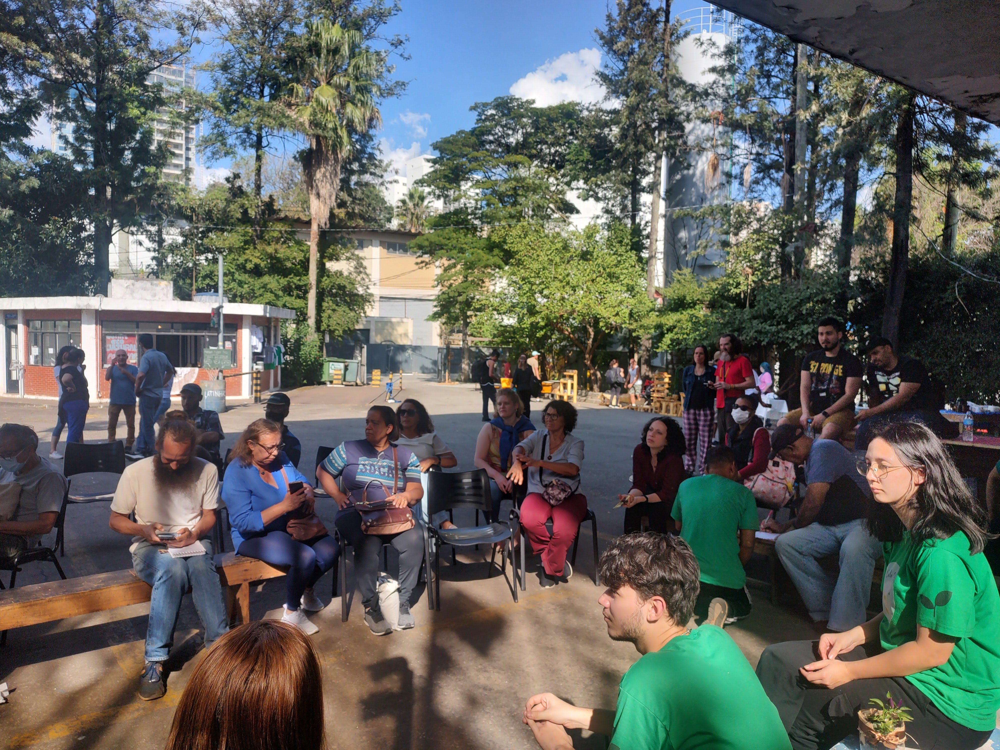
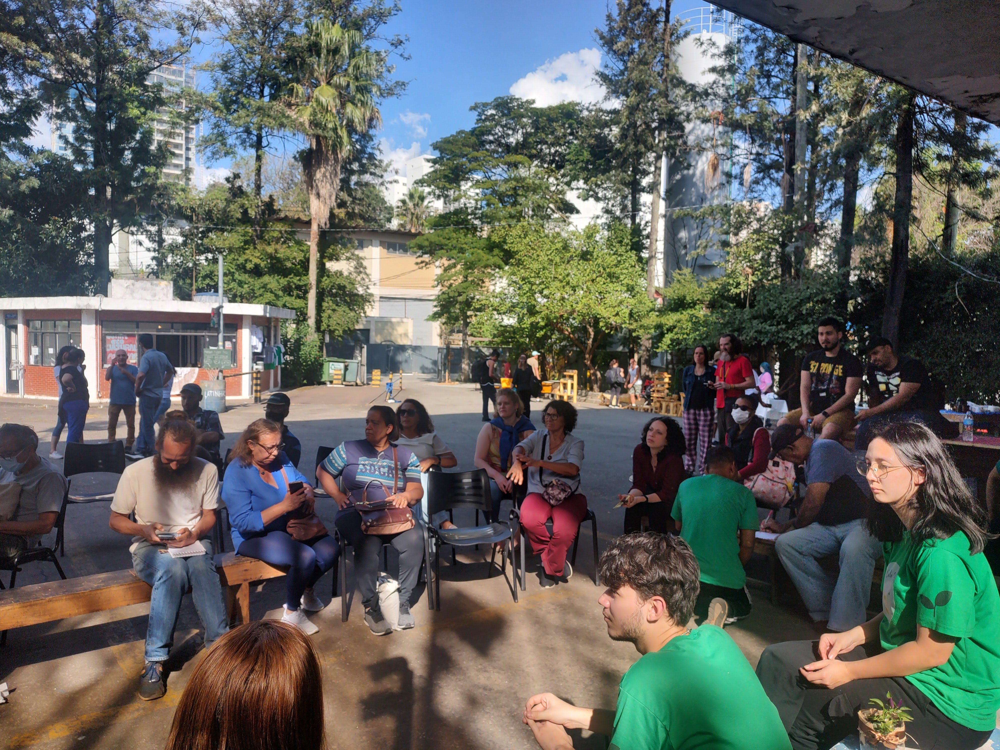

O Coletivo
O Coletivo Usina Eco-Cultural surgiu do descontentamento de moradores próximos à região do Ipiranga e do antigo Incinerador Vergueiro, que foi deixado ao abandono por mais de 20 anos. Arquitetos, urbanistas, ativistas, artistas e ambientalistas e pessoas de diversas profissões decidiram, desde 2019, se unir e discutir propostas de transformação e melhorias não apenas para o Incinerador, mas para a região como um todo. O coletivo é plural, multipartidário e horizontal. A proposta do movimento é readequar o espaço do que foi o Incinerador Vergueiro, transformando-o em um centro de cultura e estudos sobre o meio ambiente, mantendo viva a memória do que foi aquele espaço e proporcionando um local para reflexão sobre a cidade justa e democrática que desejamos no futuro. O objetivo principal é proporcionar à comunidade local um espaço revitalizado, representando não apenas um marco cultural, mas também um gesto de reparação histórica após décadas de abandono. A Usina Eco-Cultural surge como um ponto de encontro e convivência para a comunidade, contribuindo para fortalecer os laços sociais de quem vive na região.

 





 

 
